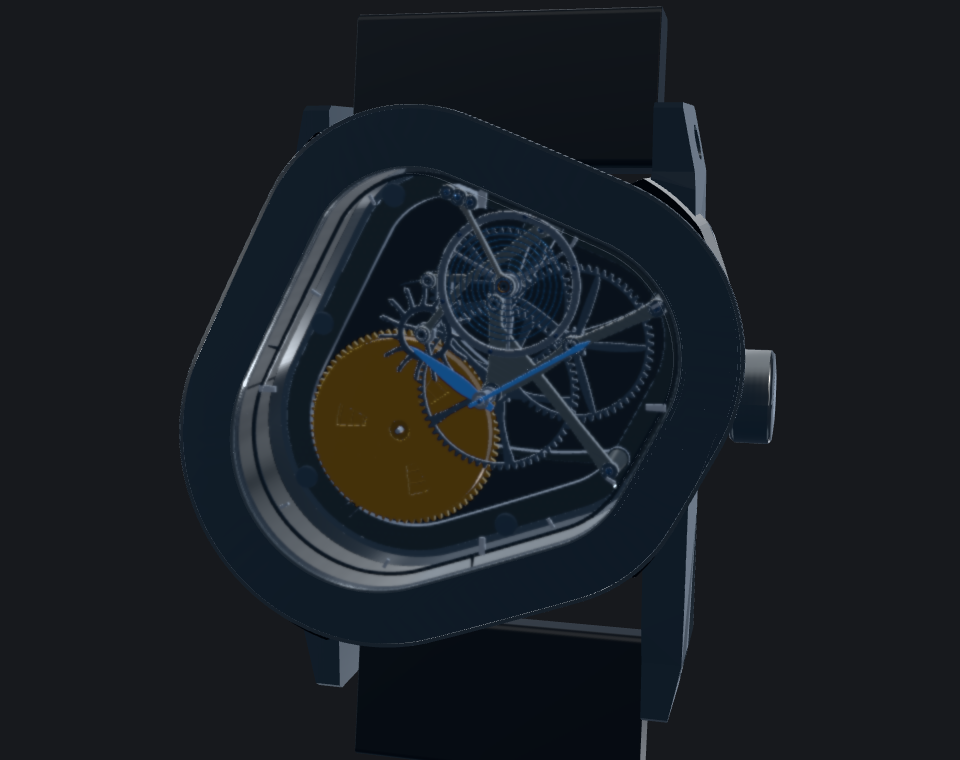
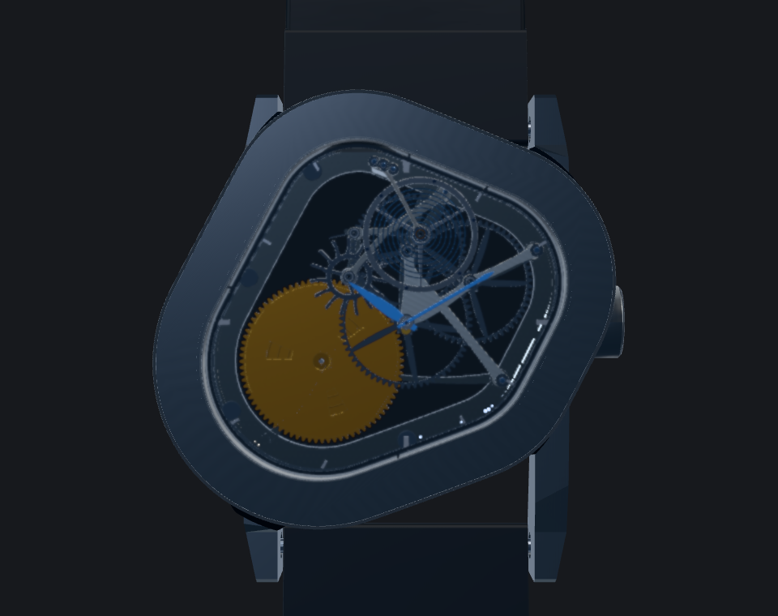
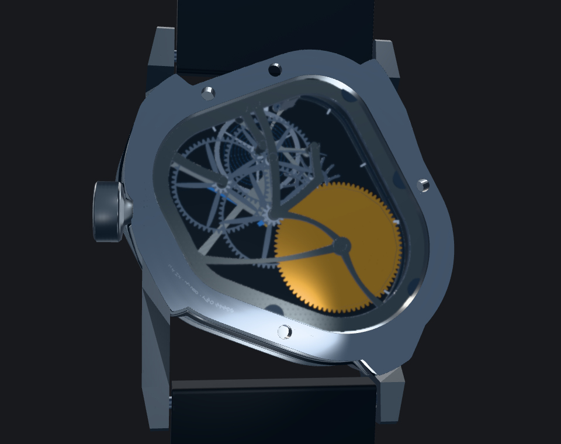
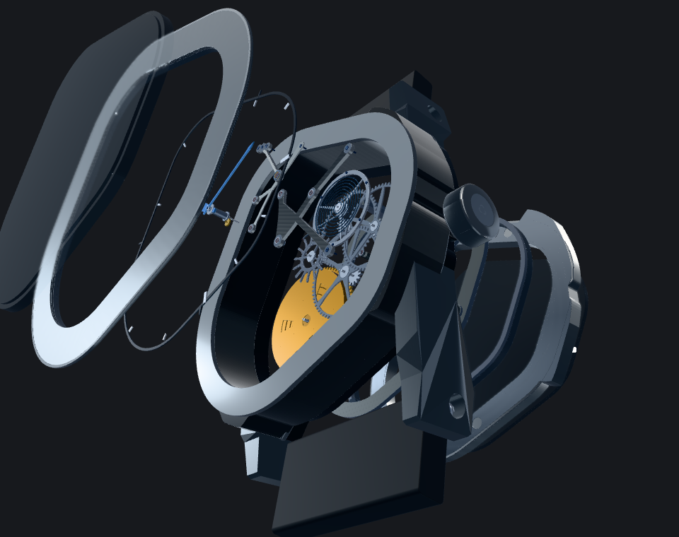
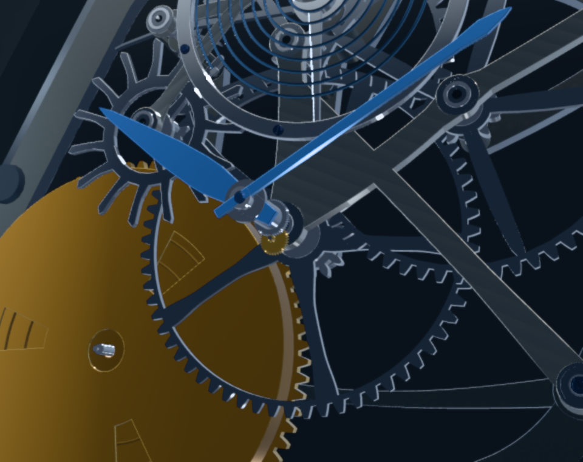
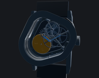
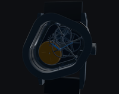

The frozen graphite-finish watch is the reference. These independent studies explore a more deliberate train bridge and a tapered five-spoke center-wheel web. The case, graphite identity, gold/blue hierarchy, sapphire treatment, and authored lighting and cameras remain as captured in the base.
The changed spoke transitions are more noticeable in the movement detail and look promising. The change is subtle in Hero, which continues to carry the watch’s overall identity.
The final refinement gives a small close-view benefit. Clearance is not accepted, and the baseline bridge is retained. Existing zero-distance conditions between the third/fourth upper arbor tips and bridge body occur in both base and candidate. No new interference was identified, but full bridge clearance remains unproven. Bridge audit.
Same authored view, materials, lighting, movement time, and 10:10 hand pose.

Same authored view, materials, lighting, movement time, and 10:10 hand pose.

Same authored view, materials, lighting, movement time, and 10:10 hand pose.

Same authored view, materials, lighting, movement time, and 10:10 hand pose.

Matched diagnostic camera only; the authored camera presets are unchanged.

Images are displayed at their native 200 px width. Reduced brightness uses a simulated half-linear-luminance version; it is an inspection aid, not a calibrated physical display measurement.


The gold mass, blue hands, and case boundary remain identifiable at this scale. Fine movement detail compresses. The study differences are mainly a close-view consideration; compare the larger views before judging their design value.